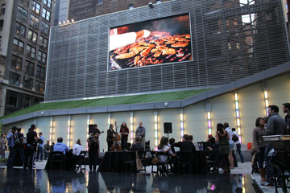
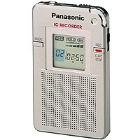

people doing strange things with electricity
This dorkbot meeting took place at 7pm on Wednesday, December 7th, 2011 at
Location One in SoHo.
It featured the poikilothermic and oviparous:
 Jaime Ekkens & Kristen Mukai: Big Screen Plaza
Pulsing between 29th to 30th Streets at 6th Avenue, in the heart of Midtown Manhattan, the Big Screen Plaza's 30 x 16 ft. HD-format LED screen is a new nexus of the city's cultural life. Established in 2010, the 10,000-square foot outdoor multimedia venue hosts major events and screenings of an eclectic mix, ranging from cinema to sports, from the arts to fashion. BSP has hosted major media events and has partnered with the Wine and Food Festival, The Brooklyn Academy of Music, the New Art Dealer's Alliance, the Streaming Museum, Leaders in Software and Art, Telegraph21 and more... The BSP is featuring Movie Nights with an array of classic films from all genres in an urban incarnation of the old drive-in. The Arts are well represented at the BSP, featuring the best works by video and animation artists. We also support New York arts schools by showcasing fine work by these emerging talents. To enhance this experience, visitors can enjoy the sumptuous offerings of the FoodParc, BeerParc and the sophisticated atmosphere of Bar Basque. Big Screen Plaza's ongoing aim is to serve as a nodal point for entertainment as well as cutting-edge cultural innovation coming out of New York and elsewhere.
http://bigscreenplaza.com/
 Joshua Hudelson: Electronic Voice Phenomenon
Electronic Voice Phenomenon (EVP) is the name that a small community of Americans across the U.S. give to their practice of using tape and digital recorders to channel the voices of the dead. For some, EVP is a means of responding to the death of a loved one, while for others it has historical or scientific interest. In all cases, however, EVP speaks to a relationship between people and recording technology, and this relationship is fraught with matters of voice, spirit, presence, and noise. Can EVP tell us anything about the nature of recording technology, and what opportunities might it provide for thinking about music composition?
http://joshuahudelson.com/Gene Kogan: Explorations in generative visual art
Gene Kogan will present a series of software programs which create generative visual artworks. Simple deterministic processes drawing on concepts from geometry, physics, and simulation are iterated many times over, amplifying small changes in initial conditions to produce novel and often unexpected results.
http://www.culturehacking.fm
NEXT MEETING: 04 January 2012